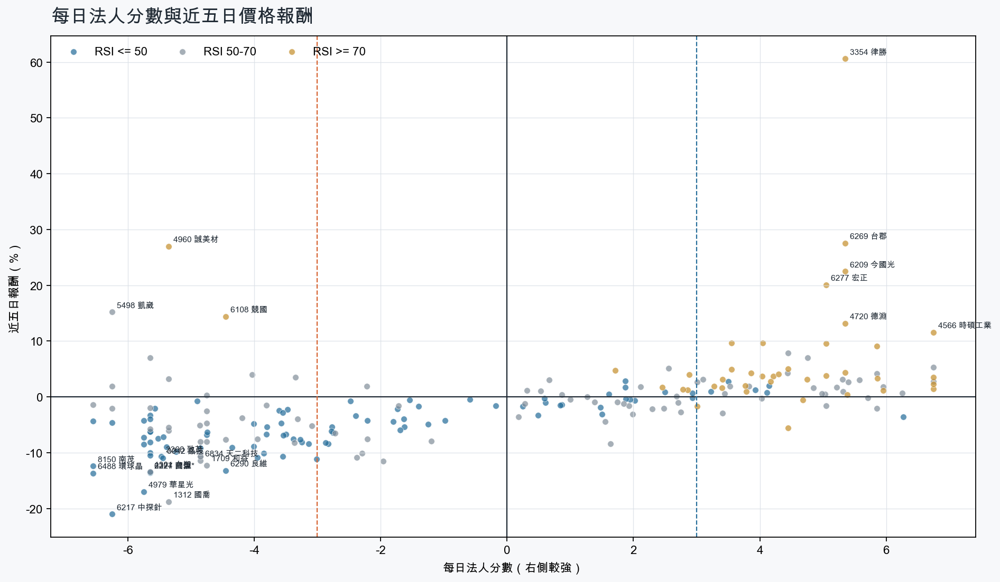
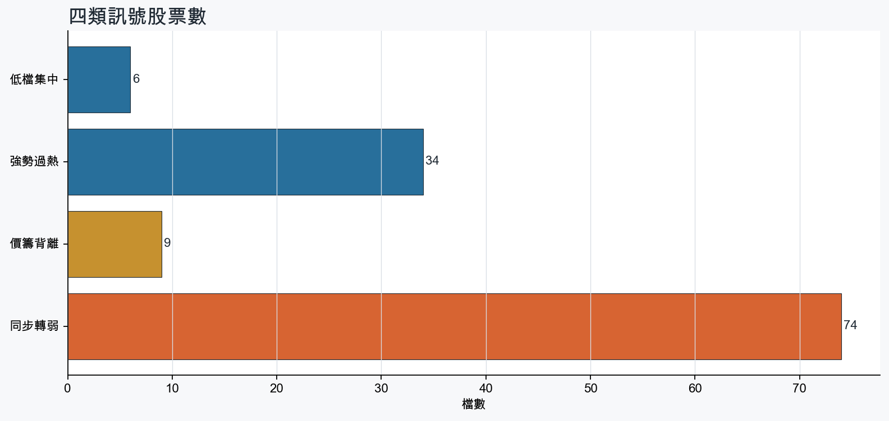
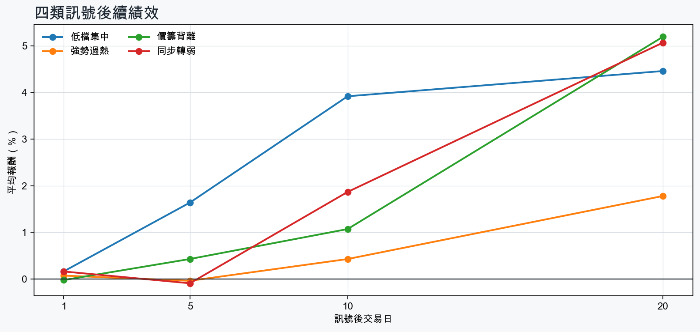

市場情緒偏空
近5日法人合計-9,117,602 張
篩選池上漲比例38.2%
籌碼好 / RSI低6 檔
籌碼差 / 價跌15 檔



EPS × PE VALUATION
法人常用的相對估值
顯示保守、基準與樂觀估值帶，不把單一數字包裝成精準目標價。
最新累計 EPS 依季數年化 × 同產業有效 P/E 的 Q25／中位數／Q75。排除本公司、非正 P/E，並以 1.5×IQR 排除離群值。估值帶是公開資料篩選值，不是法人目標價；未使用分析師預估 EPS。
MOOD × MONEY
情緒與籌碼雷達
熱度代表被討論程度；情緒分與法人方向分開計算。熱門不等於適合追價，樣本不足也不硬判多空。
| 股票 | 情緒 | 討論熱度 | 情緒 × 籌碼 | 情緒 × 基本面 |
|---|---|---|---|---|
| 1802 台玻價籌背離 | 情緒高漲 +75.2信心 75 | 1001 篇 / 63 留言 / 3 則新聞 | 熱門但法人撤退法人分 -4.8 | 基本面與情緒共振基本面分 +3.6 |
| 1815 富喬強勢過熱 | 情緒高漲 +39.8信心 75 | 1001 篇 / 63 留言 / 3 則新聞 | 情籌共振法人分 +4.0 | 基本面與情緒共振基本面分 +3.6 |
| 4979 華星光同步轉弱 | 偏多 +29.7信心 30 | 530 篇 / 0 留言 / 3 則新聞 | 熱門但法人撤退法人分 -5.8 | 基本面與情緒共振基本面分 +3.6 |
| 6274 台燿同步轉弱 | 偏多 +29.7信心 30 | 530 篇 / 0 留言 / 3 則新聞 | 熱門但法人撤退法人分 -5.7 | 基本面與情緒共振基本面分 +3.6 |
| 1301 台塑同步轉弱 | 中性分歧 +0.0信心 30 | 530 篇 / 0 留言 / 3 則新聞 | 情籌混合法人分 -5.7 | 基本面與情緒分歧基本面分 +1.1 |
| 2303 聯電同步轉弱 | 偏多 +29.7信心 30 | 530 篇 / 0 留言 / 3 則新聞 | 熱門但法人撤退法人分 -5.2 | 基本面與情緒共振基本面分 +3.6 |
| 6531 愛普*同步轉弱 | 偏空 -29.7信心 30 | 530 篇 / 0 留言 / 3 則新聞 | 情籌雙弱法人分 -5.7 | 基本面佳、情緒悲觀基本面分 +3.6 |
| 6239 力成同步轉弱 | 中性分歧 +0.0信心 30 | 530 篇 / 0 留言 / 3 則新聞 | 情籌混合法人分 -4.0 | 基本面與情緒分歧基本面分 +3.6 |
| 3090 日電貿同步轉弱 | 中性分歧 +0.0信心 30 | 530 篇 / 0 留言 / 3 則新聞 | 情籌混合法人分 -4.8 | 基本面與情緒分歧基本面分 +3.6 |
| 4960 誠美材價籌背離 | 中性分歧 +0.0信心 30 | 530 篇 / 0 留言 / 3 則新聞 | 情籌混合法人分 -5.3 | 基本面與情緒分歧基本面分 -3.8 |
| 3406 玉晶光價籌背離 | 偏多 +29.7信心 30 | 530 篇 / 0 留言 / 3 則新聞 | 熱門但法人撤退法人分 -5.7 | 基本面與情緒共振基本面分 +3.0 |
| 3673 TPK-KY價籌背離 | 偏多 +29.7信心 30 | 530 篇 / 0 留言 / 3 則新聞 | 熱門但法人撤退法人分 -3.4 | 基本面與情緒共振基本面分 +1.8 |
01
籌碼好 / RSI低
優先研究基本面；法人續買且價格止穩時，才適合分批觀察。
| 股票 / 確認狀態 | 每日法人分 | 浦男式近似 | 法人加速度 | RSI / 相對強弱 | 量價確認 | 融資融券 | 每週集保確認 | 基本面 | EPS × 同業 P/E 估值 | 情緒 / 情籌 | 近期消息 | 論壇討論 |
|---|---|---|---|---|---|---|---|---|---|---|---|---|
| 3293 鈊象等待確認 · 98 分籌碼有訊號，但價格尚未確認 | +6.3法人 +2,480 張 / 5 天 | 接近 · 83站上月線；中期均線偏多；法人籌碼偏多；留意法人買盤未加速、量能異常 | -2,385 張近3日 +686 / 連續 +10 日 | 47.9相對大盤 +7.9% | 量比 0.56確認分 +1.1成交量不足；法人買盤減速 | -2.0%融資 -42 張 / 融券 +1 張 | +4.56 pp1000張 +4.43 pp | 單月營收年增 +25.3%；累計營收年增 +18.9%；2026 Q2 累計 EPS 22.77仍需觀察下一期財報延續性來源：公開資訊觀測站 | 基準 NT$ 639.4估值帶 511.4–1,380現價 782.0 · 估值帶內 · 距基準 -18.2%2026 Q2 累計 EPS 22.77 → 年化 45.54文化創意同業 P/E 11.23／14.04／30.30 · n=14 · 信心中等以 Q2 累計 EPS 年化，不等同分析師全年預估來源：TWSE／TPEx 每日本益比 | 樣本不足 +0.0熱度 0 / 信心 0情緒樣本不足 | 近期沒有通過股票語境篩選的新聞 | 近期沒有明確提及本股的論壇樣本 |
| 2034 允強可研究 · 96 分籌碼與價格確認，可列研究清單 | +3.9法人 +2,750 張 / 4 天 | 接近 · 86站上月線；中期均線偏多；法人籌碼偏多；留意量能異常、動能位置非最佳 | +530 張近3日 +1,654 / 連續 -1 日 | 41.7相對大盤 +12.5% | 量比 0.42確認分 +4.4成交量不足 | -%融資 - 張 / 融券 - 張 | +1.52 pp1000張 +1.46 pp | 單月營收年增 +47.4%；累計營收年增 +4.7%；2026 Q2 累計 EPS 0.142026 Q2 累計營益率 3.2%來源：公開資訊觀測站 | 基準 NT$ 3.53估值帶 2.97–4.28現價 24.00 · 高於估值帶 · 距基準 -85.3%2026 Q2 累計 EPS 0.14 → 年化 0.28鋼鐵工業同業 P/E 10.62／12.59／15.28 · n=28 · 信心中等以 Q2 累計 EPS 年化，不等同分析師全年預估來源：TWSE／TPEx 每日本益比 | 樣本不足 +0.0熱度 0 / 信心 0情緒樣本不足 | 近期沒有通過股票語境篩選的新聞 | 近期沒有明確提及本股的論壇樣本 |
| 2409 友達等待確認 · 85 分先等基本面止穩 | +3.5法人 +48,185 張 / 3 天 | 接近 · 75站上月線；中期均線偏多；法人籌碼偏多；留意量能異常、基本面偏弱 | +26,538 張近3日 +41,531 / 連續 +1 日 | 46.3相對大盤 +23.4% | 量比 0.56確認分 +5.2成交量不足 | -%融資 - 張 / 融券 - 張 | -1.62 pp1000張 -1.50 pp | 2026 Q2 累計 EPS 0.03單月營收年增 -4.3%；累計營收年增 -2.1%；2026 Q2 累計營益率 -0.3%來源：公開資訊觀測站 | 基準 NT$ 1.51估值帶 0.76–2.20現價 37.25 · 高於估值帶 · 距基準 -95.9%2026 Q2 累計 EPS 0.03 → 年化 0.06光電同業 P/E 12.59／25.18／36.70 · n=69 · 信心較低以 Q2 累計 EPS 年化，不等同分析師全年預估；年化 EPS 為交易所近四季 EPS 的 0.25 倍，需保守解讀來源：TWSE／TPEx 每日本益比 | 偏多 +29.7熱度 53 / 信心 30情籌共振 | 終止連10賣！ 外資買超9.6億 掃貨友達、鴻海、南亞Yahoo股市 · 10/212409 友達 - 外資終止連10賣！一文看進出前10大回補友達4.4萬張- 股市爆料同學會CMoney · 10/21 | 近期沒有明確提及本股的論壇樣本 |
| 4916 事欣科等待確認 · 69 分籌碼有訊號，但價格尚未確認 | +4.2法人 +1,809 張 / 3 天 | 接近 · 77站上月線；中期均線偏多；法人籌碼偏多；留意法人買盤未加速、相對強度普通 | -1,200 張近3日 +552 / 連續 +2 日 | 49.0相對大盤 -1.3% | 量比 0.71確認分 -0.6法人買盤減速 | -%融資 - 張 / 融券 - 張 | -1.11 pp1000張 -1.50 pp | 單月營收年增 +70.3%；累計營收年增 +63.0%；2026 Q2 累計 EPS 5.45仍需觀察下一期財報延續性來源：公開資訊觀測站 | 基準 NT$ 190.8估值帶 137.0–276.4現價 103.5 · 低於估值帶 · 距基準 +84.3%2026 Q2 累計 EPS 5.45 → 年化 10.90電腦及週邊同業 P/E 12.57／17.50／25.36 · n=80 · 信心中等以 Q2 累計 EPS 年化，不等同分析師全年預估來源：TWSE／TPEx 每日本益比 | 樣本不足 +0.0熱度 0 / 信心 0情緒樣本不足 | 近期沒有通過股票語境篩選的新聞 | 近期沒有明確提及本股的論壇樣本 |
| 2204 中華等待確認 · 57 分籌碼有訊號，但價格尚未確認 | +3.2法人 +1,778 張 / 5 天 | 接近 · 63站上月線；法人籌碼偏多；買超具延續性；留意中期均線未翻多、法人買盤未加速 | -950 張近3日 +398 / 連續 +5 日 | 50.0相對大盤 -0.1% | 量比 0.81確認分 -1.820日線低於60日線；法人買盤減速 | -%融資 - 張 / 融券 - 張 | -0.33 pp1000張 -0.76 pp | 單月營收年增 +4.2%；累計營收年增 +8.5%；2026 Q2 累計 EPS 3.192026 Q2 累計營益率 5.1%來源：公開資訊觀測站 | 基準 NT$ 97.55估值帶 74.52–111.9現價 52.30 · 低於估值帶 · 距基準 +86.5%2026 Q2 累計 EPS 3.19 → 年化 6.38汽車工業同業 P/E 11.68／15.29／17.54 · n=27 · 信心中等以 Q2 累計 EPS 年化，不等同分析師全年預估來源：TWSE／TPEx 每日本益比 | 樣本不足 +0.0熱度 32 / 信心 10情緒樣本不足 | 中華創智成立滿週年通過ISO／IEC 27001國際資安認證、2027年拚營收目標達成- 產業工商時報 · 10/21 | 近期沒有明確提及本股的論壇樣本 |
| 9910 豐泰等待確認 · 55 分籌碼有訊號，但價格尚未確認 | +4.1法人 +5,329 張 / 5 天 | 接近 · 60法人籌碼偏多；買超具延續性；相對大盤偏強；留意未站月線、中期均線未翻多 | -1,194 張近3日 +2,229 / 連續 +8 日 | 45.3相對大盤 +0.0% | 量比 1.57確認分 -2.5收盤跌破20日線；20日線低於60日線；法人買盤減速 | -%融資 - 張 / 融券 - 張 | -0.22 pp1000張 -0.35 pp | 2026 Q2 累計 EPS 1.71單月營收年增 -4.8%；累計營收年增 -3.1%；2026 Q2 累計營益率 5.0%來源：公開資訊觀測站 | 基準 NT$ 40.19估值帶 31.98–49.56現價 68.00 · 高於估值帶 · 距基準 -40.9%2026 Q2 累計 EPS 1.71 → 年化 3.42運動休閒同業 P/E 9.35／11.75／14.49 · n=20 · 信心中等以 Q2 累計 EPS 年化，不等同分析師全年預估來源：TWSE／TPEx 每日本益比 | 樣本不足 +0.0熱度 0 / 信心 0情緒樣本不足 | 近期沒有通過股票語境篩選的新聞 | 近期沒有明確提及本股的論壇樣本 |
02
籌碼好 / RSI高
趨勢強但不追價，等待量縮、RSI降溫或回測支撐。
| 股票 / 確認狀態 | 每日法人分 | 浦男式近似 | 法人加速度 | RSI / 相對強弱 | 量價確認 | 融資融券 | 每週集保確認 | 基本面 | EPS × 同業 P/E 估值 | 情緒 / 情籌 | 近期消息 | 論壇討論 |
|---|---|---|---|---|---|---|---|---|---|---|---|---|
| 4566 時碩工業等待拉回 · 100 分等拉回，不追價 | +6.8法人 +3,438 張 / 5 天 | 接近 · 86站上月線；中期均線偏多；法人籌碼偏多；留意量能異常、動能位置非最佳 | +1,582 張近3日 +2,592 / 連續 +6 日 | 71.5相對大盤 +32.6% | 量比 3.21確認分 +5.3價格、量能與籌碼未見明顯弱項 | -%融資 - 張 / 融券 - 張 | +2.79 pp1000張 +0.67 pp | 單月營收年增 +44.6%；累計營收年增 +23.4%；2026 Q2 累計 EPS 0.992026 Q2 累計營益率 4.3%來源：公開資訊觀測站 | 基準 NT$ 39.05估值帶 26.81–57.54現價 85.10 · 高於估值帶 · 距基準 -54.1%2026 Q2 累計 EPS 0.99 → 年化 1.98電機機械同業 P/E 13.54／19.72／29.06 · n=73 · 信心中等以 Q2 累計 EPS 年化，不等同分析師全年預估來源：TWSE／TPEx 每日本益比 | 樣本不足 +0.0熱度 0 / 信心 0情緒樣本不足 | 近期沒有通過股票語境篩選的新聞 | 近期沒有明確提及本股的論壇樣本 |
| 6278 台表科等待拉回 · 100 分等拉回，不追價 | +5.8法人 +17,219 張 / 4 天 | 接近 · 83站上月線；中期均線偏多；法人籌碼偏多；留意法人買盤未加速、RSI過熱 | -11,663 張近3日 +4,314 / 連續 -1 日 | 82.1相對大盤 +62.1% | 量比 1.01確認分 +2.5法人買盤減速 | -%融資 - 張 / 融券 - 張 | +11.71 pp1000張 +12.77 pp | 單月營收年增 +15.9%；累計營收年增 +6.5%；2026 Q2 累計 EPS 4.932026 Q2 累計營益率 6.0%來源：公開資訊觀測站 | 基準 NT$ 235.6估值帶 122.9–370.3現價 316.5 · 估值帶內 · 距基準 -25.6%2026 Q2 累計 EPS 4.93 → 年化 9.86光電同業 P/E 12.46／23.89／37.56 · n=68 · 信心中等以 Q2 累計 EPS 年化，不等同分析師全年預估來源：TWSE／TPEx 每日本益比 | 偏多 +29.7熱度 53 / 信心 30情籌共振 | PCB材料缺口上看40％！「欣興、聯茂、台表科股價大噴發」誰才是肉最多？這檔73％潛在漲幅 雙資都在搶旺得富理財網 · 10/21【即時新聞】台表科(6278)通吃AI大單，這「5檔概念股」爆量輪動多空洗牌！CMoney投資網誌 · 10/21 | 近期沒有明確提及本股的論壇樣本 |
| 6209 今國光等待拉回 · 96 分等拉回，不追價 | +5.3法人 +21,978 張 / 4 天 | 接近 · 73站上月線；中期均線偏多；法人籌碼偏多；留意法人買盤未加速、量能異常 | -9,782 張近3日 +3,359 / 連續 +2 日 | 85.6相對大盤 +37.4% | 量比 4.14確認分 +1.4法人買盤減速 | -%融資 - 張 / 融券 - 張 | +9.85 pp1000張 +10.39 pp | 單月營收年增 +81.6%；累計營收年增 +71.4%；2026 Q2 累計 EPS 1.53仍需觀察下一期財報延續性來源：公開資訊觀測站 | 基準 NT$ 73.10估值帶 38.13–111.2現價 110.0 · 估值帶內 · 距基準 -33.5%2026 Q2 累計 EPS 1.53 → 年化 3.06光電同業 P/E 12.46／23.89／36.33 · n=68 · 信心中等以 Q2 累計 EPS 年化，不等同分析師全年預估來源：TWSE／TPEx 每日本益比 | 中性分歧 +0.0熱度 53 / 信心 30情籌混合 | 最狂不是台玻！「這檔」60天暴漲328%、今國光週轉率破119% 14檔注意股一次看Yahoo股市 · 10/21焦點股》今國光：光學族群走弱 股價衝高後翻黑自由財經 · 10/19 | 近期沒有明確提及本股的論壇樣本 |
| 4938 和碩等待拉回 · 100 分等拉回，不追價 | +4.5法人 +22,721 張 / 4 天 | 命中 · 96站上月線；中期均線偏多；法人籌碼偏多；留意動能位置非最佳 | +10,152 張近3日 +16,528 / 連續 +4 日 | 77.5相對大盤 +16.9% | 量比 1.72確認分 +6.5價格、量能與籌碼未見明顯弱項 | -%融資 - 張 / 融券 - 張 | +0.60 pp1000張 +0.72 pp | 單月營收年增 +86.9%；累計營收年增 +13.8%；2026 Q2 累計 EPS 2.262026 Q2 累計營益率 1.4%來源：公開資訊觀測站 | 基準 NT$ 78.02估值帶 56.82–114.6現價 105.0 · 估值帶內 · 距基準 -25.7%2026 Q2 累計 EPS 2.26 → 年化 4.52電腦及週邊同業 P/E 12.57／17.26／25.36 · n=80 · 信心中等以 Q2 累計 EPS 年化，不等同分析師全年預估來源：TWSE／TPEx 每日本益比 | 偏多 +29.7熱度 53 / 信心 30情籌共振 | TWA00 加權指數- AI需求爆發！大量與和碩第三季營收齊創新高- 股市爆料同學會CMoney · 10/184938 和碩- 和碩小金雞東擎申購吸19.8萬筆！凍資逾273億元中籤率約0.58% - 股市爆料同學會CMoney · 10/18 | 近期沒有明確提及本股的論壇樣本 |
| 3005 神基等待拉回 · 93 分等拉回，不追價 | +5.9法人 +6,116 張 / 5 天 | 命中 · 89站上月線；中期均線偏多；法人籌碼偏多；留意法人買盤未加速、動能位置非最佳 | -1,307 張近3日 +2,929 / 連續 +9 日 | 76.7相對大盤 +5.7% | 量比 1.12確認分 +1.9法人買盤減速 | -%融資 - 張 / 融券 - 張 | +0.42 pp1000張 +0.18 pp | 單月營收年增 +16.3%；累計營收年增 +10.7%；2026 Q2 累計 EPS 4.27仍需觀察下一期財報延續性來源：公開資訊觀測站 | 基準 NT$ 149.4估值帶 107.3–216.6現價 124.5 · 估值帶內 · 距基準 +20.0%2026 Q2 累計 EPS 4.27 → 年化 8.54電腦及週邊同業 P/E 12.57／17.50／25.36 · n=80 · 信心中等以 Q2 累計 EPS 年化，不等同分析師全年預估來源：TWSE／TPEx 每日本益比 | 中性分歧 +0.0熱度 44 / 信心 20情籌混合 | 【12:40 即時新聞】神基(3005)盤中續強，高殖利率題材受關注CMoney投資網誌 · 10/203005 神基- 伺服器機櫃族群為何走強？3檔重點觀察- 股市爆料同學會CMoney · 10/20 | 近期沒有明確提及本股的論壇樣本 |
| 4720 德淵等待拉回 · 100 分等拉回，不追價 | +5.3法人 +6,008 張 / 4 天 | 接近 · 86站上月線；中期均線偏多；法人籌碼偏多；留意量能異常、動能位置非最佳 | +6,535 張近3日 +6,859 / 連續 +3 日 | 74.7相對大盤 +57.0% | 量比 4.91確認分 +5.3價格、量能與籌碼未見明顯弱項 | -%融資 - 張 / 融券 - 張 | -0.30 pp1000張 -0.44 pp | 單月營收年增 +33.0%；累計營收年增 +16.4%；2026 Q2 累計 EPS 0.132026 Q2 累計營益率 1.3%來源：公開資訊觀測站 | 基準 NT$ 5.12估值帶 3.49–7.24現價 29.25 · 高於估值帶 · 距基準 -82.5%2026 Q2 累計 EPS 0.13 → 年化 0.26化學工業同業 P/E 13.43／19.71／27.86 · n=33 · 信心較低以 Q2 累計 EPS 年化，不等同分析師全年預估；年化 EPS 為交易所近四季 EPS 的 0.46 倍，需保守解讀來源：TWSE／TPEx 每日本益比 | 中性分歧 +0.0熱度 53 / 信心 30情籌混合 | 【1021台股盤後】新台幣強升助攻外資轉買！急跌地板股迎反彈契機，外本比鎖定【德淵】、【上品】、【眾達-KY】永豐金證券 · 10/21新台幣強升助攻外資轉買！急跌地板股迎反彈契機，外本比鎖定#德淵#上品#眾達KY｜ 2026.10.22 #台股盤前解析｜今天 Shot 這盤｜豐雲學堂直播｜豐雲學堂2026 年 10 月永豐金證券 · 10/21 | 近期沒有明確提及本股的論壇樣本 |
| 9904 寶成等待拉回 · 93 分等拉回，不追價 | +6.0法人 +35,477 張 / 5 天 | 命中 · 85站上月線；中期均線偏多；法人籌碼偏多；留意法人買盤未加速、動能位置非最佳 | -18,638 張近3日 +12,215 / 連續 +10 日 | 72.3相對大盤 +7.5% | 量比 1.12確認分 +2.4法人買盤減速 | -%融資 - 張 / 融券 - 張 | +1.36 pp1000張 +1.31 pp | 單月營收年增 +10.4%；2026 Q2 累計 EPS 2.37累計營收年增 -0.5%；2026 Q2 累計營益率 2.3%來源：公開資訊觀測站 | 基準 NT$ 58.87估值帶 50.86–70.44現價 26.40 · 低於估值帶 · 距基準 +123.0%2026 Q2 累計 EPS 2.37 → 年化 4.74運動休閒同業 P/E 10.73／12.42／14.86 · n=19 · 信心中等以 Q2 累計 EPS 年化，不等同分析師全年預估來源：TWSE／TPEx 每日本益比 | 偏空 -29.7熱度 53 / 信心 30法人布局、市場悲觀 | 寶成(9904) 10/21 三大法人買賣超CMoney · 10/21《投信賣超5-3》正新(604)、寶成(542)、中纖(491)富聯網 · 10/21 | 近期沒有明確提及本股的論壇樣本 |
| 5469 瀚宇博等待拉回 · 100 分等拉回，不追價 | +3.3法人 +2,714 張 / 4 天 | 命中 · 96站上月線；中期均線偏多；法人籌碼偏多；留意動能位置非最佳 | +471 張近3日 +1,630 / 連續 -1 日 | 77.8相對大盤 +16.7% | 量比 1.43確認分 +5.7價格、量能與籌碼未見明顯弱項 | -%融資 - 張 / 融券 - 張 | +1.12 pp1000張 +1.28 pp | 單月營收年增 +36.2%；累計營收年增 +26.2%；2026 Q2 累計 EPS 2.052026 Q2 累計營益率 7.4%來源：公開資訊觀測站 | 基準 NT$ 111.8估值帶 73.76–183.9現價 84.50 · 估值帶內 · 距基準 +32.4%2026 Q2 累計 EPS 2.05 → 年化 4.10電子零組件同業 P/E 17.99／27.28／44.86 · n=147 · 信心中等以 Q2 累計 EPS 年化，不等同分析師全年預估來源：TWSE／TPEx 每日本益比 | 樣本不足 +0.0熱度 0 / 信心 0情緒樣本不足 | 近期沒有通過股票語境篩選的新聞 | 近期沒有明確提及本股的論壇樣本 |
| 1477 聚陽等待拉回 · 91 分等拉回，不追價 | +6.8法人 +3,700 張 / 5 天 | 接近 · 63站上月線；法人籌碼偏多；買超具延續性；留意中期均線未翻多、法人買盤未加速 | -3,257 張近3日 +697 / 連續 +10 日 | 79.3相對大盤 +8.3% | 量比 0.45確認分 +1.120日線低於60日線；成交量不足；法人買盤減速 | -%融資 - 張 / 融券 - 張 | +0.49 pp1000張 -1.15 pp | 單月營收年增 +24.0%；累計營收年增 +0.2%；2026 Q2 累計 EPS 7.65仍需觀察下一期財報延續性來源：公開資訊觀測站 | 基準 NT$ 199.5估值帶 155.1–285.6現價 209.0 · 估值帶內 · 距基準 -4.5%2026 Q2 累計 EPS 7.65 → 年化 15.30紡織纖維同業 P/E 10.14／13.04／18.67 · n=34 · 信心中等以 Q2 累計 EPS 年化，不等同分析師全年預估來源：TWSE／TPEx 每日本益比 | 樣本不足 +0.0熱度 0 / 信心 0情緒樣本不足 | 近期沒有通過股票語境篩選的新聞 | 近期沒有明確提及本股的論壇樣本 |
| 1569 濱川等待拉回 · 100 分等拉回，不追價 | +5.3法人 +2,985 張 / 4 天 | 接近 · 75站上月線；中期均線偏多；法人籌碼偏多；留意基本面偏弱、RSI過熱 | +4,257 張近3日 +3,311 / 連續 +3 日 | 81.7相對大盤 +58.5% | 量比 1.01確認分 +6.5價格、量能與籌碼未見明顯弱項 | +0.7%融資 +88 張 / 融券 +2 張 | +5.90 pp1000張 +4.95 pp | 單月營收年增 +39.1%累計營收年增 -2.3%；2026 Q2 累計 EPS -1.67；2026 Q2 累計營益率 -10.7%來源：公開資訊觀測站 | 不適用年化 EPS 非正數，不適合使用本益比估值 | 樣本不足 +9.9熱度 32 / 信心 10情緒樣本不足 | 【09:27 即時新聞】濱川(1569) 亮燈漲停，市場聚焦AI水冷與雙鴻資本合作CMoney投資網誌 · 10/21 | 近期沒有明確提及本股的論壇樣本 |
| 1815 富喬等待拉回 · 86 分等拉回，不追價 | +4.0法人 +25,337 張 / 2 天 | 命中 · 84站上月線；中期均線偏多；法人籌碼偏多；留意法人買盤未加速、買超延續不足 | -23,388 張近3日 -4,215 / 連續 -2 日 | 71.8相對大盤 +23.6% | 量比 1.72確認分 +1.9法人買盤減速；融資單日增幅偏高 | +5.7%融資 +2,505 張 / 融券 -449 張 | +1.25 pp1000張 +1.22 pp | 單月營收年增 +82.1%；累計營收年增 +54.9%；2026 Q2 累計 EPS 2.24仍需觀察下一期財報延續性來源：公開資訊觀測站 | 基準 NT$ 121.0估值帶 78.85–201.0現價 147.0 · 估值帶內 · 距基準 -17.7%2026 Q2 累計 EPS 2.24 → 年化 4.48電子零組件同業 P/E 17.60／27.00／44.86 · n=147 · 信心中等以 Q2 累計 EPS 年化，不等同分析師全年預估來源：TWSE／TPEx 每日本益比 | 情緒高漲 +39.8熱度 100 / 信心 75情籌共振 | 商周-3年股價漲12倍！老牌玻纖廠富喬谷底翻身，靠這「關鍵一役」逆襲成AI飆股商業周刊 · 10/21玻纖布股價發威、傳產轉骨成功 南亞、富喬、台玻掀徵才熱 | 財經 | CTWANTCTWANT · 10/21 | [新聞] 供應吃緊 台玻、富喬點火PTT Stock · 10-21 · 63 留言 |
| 2912 統一超等待拉回 · 86 分等拉回，不追價 | +6.8法人 +15,245 張 / 5 天 | 接近 · 70站上月線；法人籌碼偏多；買超具延續性；留意中期均線未翻多、法人買盤未加速 | -6,116 張近3日 +5,628 / 連續 +10 日 | 73.1相對大盤 +4.3% | 量比 0.65確認分 +0.820日線低於60日線；法人買盤減速 | -%融資 - 張 / 融券 - 張 | -0.13 pp1000張 -0.27 pp | 單月營收年增 +7.8%；累計營收年增 +5.7%；2026 Q2 累計 EPS 6.032026 Q2 累計營益率 4.2%來源：公開資訊觀測站 | 基準 NT$ 165.6估值帶 96.96–209.8現價 224.5 · 高於估值帶 · 距基準 -26.2%2026 Q2 累計 EPS 6.03 → 年化 12.06貿易百貨同業 P/E 8.04／13.73／17.40 · n=10 · 信心中等以 Q2 累計 EPS 年化，不等同分析師全年預估來源：TWSE／TPEx 每日本益比 | 樣本不足 +0.0熱度 32 / 信心 10情緒樣本不足 | 2912 統一超- 深化會員經濟！uniopen PRIMA 專屬偶像應援包限量開搶- 股市爆料同學會CMoney · 10/21 | 近期沒有明確提及本股的論壇樣本 |
| 2006 東和鋼鐵等待拉回 · 90 分等拉回，不追價 | +3.9法人 +2,024 張 / 5 天 | 命中 · 89站上月線；中期均線偏多；法人籌碼偏多；留意法人買盤未加速、動能位置非最佳 | -598 張近3日 +852 / 連續 +8 日 | 73.7相對大盤 +7.1% | 量比 1.47確認分 +3.3法人買盤減速 | -%融資 - 張 / 融券 - 張 | +0.24 pp1000張 -0.47 pp | 單月營收年增 +13.8%；累計營收年增 +3.6%；2026 Q2 累計 EPS 4.07仍需觀察下一期財報延續性來源：公開資訊觀測站 | 基準 NT$ 105.1估值帶 86.94–129.3現價 93.30 · 估值帶內 · 距基準 +12.6%2026 Q2 累計 EPS 4.07 → 年化 8.14鋼鐵工業同業 P/E 10.68／12.91／15.88 · n=29 · 信心中等以 Q2 累計 EPS 年化，不等同分析師全年預估來源：TWSE／TPEx 每日本益比 | 樣本不足 +0.0熱度 0 / 信心 0情緒樣本不足 | 近期沒有通過股票語境篩選的新聞 | 近期沒有明確提及本股的論壇樣本 |
| 4927 泰鼎-KY等待拉回 · 87 分等拉回，不追價 | +4.5法人 +3,689 張 / 3 天 | 接近 · 74站上月線；中期均線偏多；法人籌碼偏多；留意法人買盤未加速、基本面偏弱 | -2,521 張近3日 +2,068 / 連續 +1 日 | 70.2相對大盤 +27.9% | 量比 1.27確認分 +2.5法人買盤減速 | -%融資 - 張 / 融券 - 張 | +9.01 pp1000張 +8.22 pp | 單月營收年增 +72.8%；累計營收年增 +9.7%2026 Q2 累計 EPS -5.46；2026 Q2 累計營益率 -22.8%來源：公開資訊觀測站 | 不適用年化 EPS 非正數，不適合使用本益比估值 | 樣本不足 +9.9熱度 32 / 信心 10情緒樣本不足 | 【11:23 即時新聞】泰鼎-KY(4927)盤中小漲，延續營收創高題材CMoney投資網誌 · 10/19 | 近期沒有明確提及本股的論壇樣本 |
| 1476 儒鴻等待拉回 · 90 分等拉回，不追價 | +6.8法人 +2,775 張 / 5 天 | 接近 · 63站上月線；法人籌碼偏多；買超具延續性；留意中期均線未翻多、法人買盤未加速 | -2,432 張近3日 +380 / 連續 +7 日 | 86.4相對大盤 +15.9% | 量比 0.65確認分 +1.120日線低於60日線；成交量不足；法人買盤減速 | -%融資 - 張 / 融券 - 張 | +0.43 pp1000張 +0.38 pp | 單月營收年增 +8.3%；累計營收年增 +5.4%；2026 Q2 累計 EPS 12.35仍需觀察下一期財報延續性來源：公開資訊觀測站 | 基準 NT$ 332.0估值帶 250.5–461.1現價 325.0 · 估值帶內 · 距基準 +2.1%2026 Q2 累計 EPS 12.35 → 年化 24.70紡織纖維同業 P/E 10.14／13.44／18.67 · n=34 · 信心中等以 Q2 累計 EPS 年化，不等同分析師全年預估來源：TWSE／TPEx 每日本益比 | 樣本不足 +0.0熱度 0 / 信心 0情緒樣本不足 | 近期沒有通過股票語境篩選的新聞 | 近期沒有明確提及本股的論壇樣本 |
03
籌碼差 / 股價上漲
可能是事件行情或軋空；沒有籌碼改善前避免追高。
| 股票 / 確認狀態 | 每日法人分 | 浦男式近似 | 法人加速度 | RSI / 相對強弱 | 量價確認 | 融資融券 | 每週集保確認 | 基本面 | EPS × 同業 P/E 估值 | 情緒 / 情籌 | 近期消息 | 論壇討論 |
|---|---|---|---|---|---|---|---|---|---|---|---|---|
| 4960 誠美材風險警示 · 24 分背離警戒，避免追高 | -5.3法人 -6,473 張 / 1 天 | 未命中 · 46站上月線；中期均線偏多；明顯強於大盤；留意法人籌碼偏弱、法人買盤未加速 | -5,207 張近3日 -5,309 / 連續 -1 日 | 77.4相對大盤 +35.3% | 量比 5.11確認分 +1.4法人買盤減速 | -%融資 - 張 / 融券 - 張 | -1.25 pp1000張 -0.89 pp | 尚無明確成長訊號單月營收年增 -14.9%；累計營收年增 -10.3%；2026 Q2 累計 EPS -0.60來源：公開資訊觀測站 | 不適用年化 EPS 非正數，不適合使用本益比估值 | 中性分歧 +0.0熱度 53 / 信心 30情籌混合 | 誠美材(4960)拚轉型！跨入半導體先進封裝，N 字勾型態狂噴 29%！-Sara WangCMoney投資網誌 · 10/214960 誠美材- 洗洗再上! - 股市爆料同學會CMoney · 10/21 | 近期沒有明確提及本股的論壇樣本 |
| 5498 凱崴風險警示 · 62 分背離警戒，避免追高 | -6.2法人 -3,411 張 / 0 天 | 接近 · 82站上月線；中期均線偏多；法人買盤加速；留意法人籌碼偏弱、買超延續不足 | +1,820 張近3日 -667 / 連續 -5 日 | 69.8相對大盤 +23.2% | 量比 2.11確認分 +5.9融資單日增幅偏高 | +22.4%融資 +1,420 張 / 融券 -554 張 | +0.17 pp1000張 -0.57 pp | 單月營收年增 +78.7%；累計營收年增 +71.8%；2026 Q2 累計 EPS 0.182026 Q2 累計營益率 6.4%來源：公開資訊觀測站 | 基準 NT$ 9.77估值帶 6.35–16.11現價 63.50 · 高於估值帶 · 距基準 -84.6%2026 Q2 累計 EPS 0.18 → 年化 0.36電子零組件同業 P/E 17.63／27.14／44.74 · n=148 · 信心中等以 Q2 累計 EPS 年化，不等同分析師全年預估來源：TWSE／TPEx 每日本益比 | 樣本不足 +0.0熱度 0 / 信心 0情緒樣本不足 | 近期沒有通過股票語境篩選的新聞 | 近期沒有明確提及本股的論壇樣本 |
| 6108 競國風險警示 · 47 分背離警戒，避免追高 | -4.5法人 -2,704 張 / 2 天 | 未命中 · 56站上月線；中期均線偏多；明顯強於大盤；留意法人籌碼偏弱、法人買盤未加速 | -1,563 張近3日 -1,096 / 連續 -1 日 | 92.5相對大盤 +37.5% | 量比 2.75確認分 +1.8法人買盤減速 | -%融資 - 張 / 融券 - 張 | +1.07 pp1000張 -0.52 pp | 單月營收年增 +33.1%；累計營收年增 +31.4%；2026 Q2 累計 EPS 0.322026 Q2 累計營益率 -8.0%來源：公開資訊觀測站 | 基準 NT$ 17.37估值帶 11.28–28.63現價 33.00 · 高於估值帶 · 距基準 -47.4%2026 Q2 累計 EPS 0.32 → 年化 0.64電子零組件同業 P/E 17.63／27.14／44.74 · n=148 · 信心較低以 Q2 累計 EPS 年化，不等同分析師全年預估；年化 EPS 為交易所近四季 EPS 的 3.20 倍，需保守解讀來源：TWSE／TPEx 每日本益比 | 樣本不足 +0.0熱度 0 / 信心 0情緒樣本不足 | 近期沒有通過股票語境篩選的新聞 | 近期沒有明確提及本股的論壇樣本 |
| 3406 玉晶光風險警示 · 62 分背離警戒，避免追高 | -5.7法人 -2,015 張 / 1 天 | 接近 · 72站上月線；中期均線偏多；法人買盤加速；留意法人籌碼偏弱、買超延續不足 | +2,177 張近3日 -949 / 連續 -2 日 | 68.1相對大盤 +17.9% | 量比 0.41確認分 +5.2成交量不足 | -%融資 - 張 / 融券 - 張 | +1.76 pp1000張 +0.36 pp | 單月營收年增 +0.5%；累計營收年增 +10.1%；2026 Q2 累計 EPS 13.99仍需觀察下一期財報延續性來源：公開資訊觀測站 | 基準 NT$ 668.4估值帶 348.6–1,051現價 1,140 · 高於估值帶 · 距基準 -41.4%2026 Q2 累計 EPS 13.99 → 年化 27.98光電同業 P/E 12.46／23.89／37.56 · n=68 · 信心中等以 Q2 累計 EPS 年化，不等同分析師全年預估來源：TWSE／TPEx 每日本益比 | 偏多 +29.7熱度 53 / 信心 30熱門但法人撤退 | 玉晶光攜3M攻EBO，2028年前拚元件量產台視全球資訊網 · 10/21光學股回血！玉晶光亮燈漲停 聯一光刷天價ETtoday財經雲 · 10/21 | 近期沒有明確提及本股的論壇樣本 |
| 3673 TPK-KY風險警示 · 50 分背離警戒，避免追高 | -3.4法人 -3,453 張 / 2 天 | 接近 · 71站上月線；中期均線偏多；明顯強於大盤；留意法人籌碼偏弱、法人買盤未加速 | -3,567 張近3日 -3,568 / 連續 -2 日 | 50.5相對大盤 +18.1% | 量比 1.63確認分 +2.5法人買盤減速 | -%融資 - 張 / 融券 - 張 | -1.74 pp1000張 -2.47 pp | 單月營收年增 +27.8%；累計營收年增 +16.6%；2026 Q2 累計 EPS 3.332026 Q2 累計營益率 -1.4%來源：公開資訊觀測站 | 基準 NT$ 168.4估值帶 82.98–250.2現價 75.80 · 低於估值帶 · 距基準 +122.1%2026 Q2 累計 EPS 3.33 → 年化 6.66光電同業 P/E 12.46／25.28／37.56 · n=68 · 信心中等以 Q2 累計 EPS 年化，不等同分析師全年預估來源：TWSE／TPEx 每日本益比 | 偏多 +29.7熱度 53 / 信心 30熱門但法人撤退 | 【13:13 即時新聞】TPK-KY(3673) 盤中走強，玻璃基板TGV切入AI資料中心受關注CMoney投資網誌 · 10/213673 TPK-KY - TPK 擬加碼投資支出- 股市爆料同學會CMoney · 10/21 | 近期沒有明確提及本股的論壇樣本 |
| 3441 聯一光風險警示 · 41 分背離警戒，避免追高 | -6.2法人 -1,975 張 / 0 天 | 接近 · 65站上月線；中期均線偏多；明顯強於大盤；留意法人籌碼偏弱、法人買盤未加速 | -1,934 張近3日 -1,904 / 連續 -5 日 | 65.4相對大盤 +30.8% | 量比 4.61確認分 +1.9法人買盤減速 | -3.1%融資 -89 張 / 融券 +128 張 | -0.26 pp1000張 -0.05 pp | 單月營收年增 +8.8%；累計營收年增 +25.9%；2026 Q2 累計 EPS 1.16仍需觀察下一期財報延續性來源：公開資訊觀測站 | 基準 NT$ 55.42估值帶 28.91–84.29現價 241.5 · 高於估值帶 · 距基準 -77.0%2026 Q2 累計 EPS 1.16 → 年化 2.32光電同業 P/E 12.46／23.89／36.33 · n=68 · 信心中等以 Q2 累計 EPS 年化，不等同分析師全年預估來源：TWSE／TPEx 每日本益比 | 偏多 +29.7熱度 53 / 信心 30熱門但法人撤退 | 光學股回血！玉晶光亮燈漲停 聯一光刷天價ETtoday財經雲 · 10/213441 聯一光- 【10/21 產業即時新聞】光學鏡片族群強勢大漲，雙王帶頭衝鋒、高階鏡頭題材點火盤面- 股市爆料同學會CMoney · 10/21 | 近期沒有明確提及本股的論壇樣本 |
| 3305 昇貿風險警示 · 51 分背離警戒，避免追高 | -5.3法人 -3,622 張 / 1 天 | 接近 · 75站上月線；中期均線偏多；明顯強於大盤；留意法人籌碼偏弱、法人買盤未加速 | -4,387 張近3日 -3,924 / 連續 -3 日 | 61.1相對大盤 +9.9% | 量比 2.08確認分 +2.5法人買盤減速 | -%融資 - 張 / 融券 - 張 | +0.20 pp1000張 +0.30 pp | 單月營收年增 +46.3%；累計營收年增 +59.5%；2026 Q2 累計 EPS 3.84仍需觀察下一期財報延續性來源：公開資訊觀測站 | 基準 NT$ 154.4估值帶 110.8–254.4現價 112.0 · 估值帶內 · 距基準 +37.9%2026 Q2 累計 EPS 3.84 → 年化 7.68其他電子同業 P/E 14.43／20.11／33.13 · n=65 · 信心中等以 Q2 累計 EPS 年化，不等同分析師全年預估來源：TWSE／TPEx 每日本益比 | 樣本不足 +0.0熱度 0 / 信心 0情緒樣本不足 | 近期沒有通過股票語境篩選的新聞 | 近期沒有明確提及本股的論壇樣本 |
| 6415 矽力*-KY風險警示 · 76 分背離警戒，避免追高 | -4.0法人 -2,326 張 / 1 天 | 接近 · 82站上月線；中期均線偏多；法人買盤加速；留意法人籌碼偏弱、買超延續不足 | +645 張近3日 -288 / 連續 +1 日 | 69.2相對大盤 +12.6% | 量比 1.28確認分 +6.5價格、量能與籌碼未見明顯弱項 | -%融資 - 張 / 融券 - 張 | +0.34 pp1000張 +0.26 pp | 單月營收年增 +50.7%；累計營收年增 +35.2%；2026 Q2 累計 EPS 6.03仍需觀察下一期財報延續性來源：公開資訊觀測站 | 基準 NT$ 316.9估值帶 202.8–546.8現價 490.0 · 估值帶內 · 距基準 -35.3%2026 Q2 累計 EPS 6.03 → 年化 12.06半導體同業 P/E 16.82／26.28／45.34 · n=147 · 信心中等以 Q2 累計 EPS 年化，不等同分析師全年預估來源：TWSE／TPEx 每日本益比 | 樣本不足 +0.0熱度 0 / 信心 0情緒樣本不足 | 近期沒有通過股票語境篩選的新聞 | 近期沒有明確提及本股的論壇樣本 |
| 1802 台玻風險警示 · 55 分背離警戒，避免追高 | -4.8法人 -29,647 張 / 2 天 | 接近 · 75站上月線；中期均線偏多；明顯強於大盤；留意法人籌碼偏弱、法人買盤未加速 | -86,912 張近3日 -33,622 / 連續 -1 日 | 62.8相對大盤 +14.9% | 量比 1.88確認分 +2.5法人買盤減速 | -%融資 - 張 / 融券 - 張 | +1.16 pp1000張 +1.14 pp | 單月營收年增 +34.1%；累計營收年增 +18.7%；2026 Q2 累計 EPS 0.64仍需觀察下一期財報延續性來源：公開資訊觀測站 | 不適用同產業有效 P/E 樣本不足（3 檔） | 情緒高漲 +75.2熱度 100 / 信心 75熱門但法人撤退 | 焦點股》台玻：股價紅翻黑 散戶哀號「玻璃碎滿地」自由財經 · 10/21台股反攻誰最旺？買氣湧入「這檔面板」爆30萬張奪成交王台玻受日廠產能吃緊、訂單外溢成焦點Yahoo股市 · 10/21 | [新聞] 供應吃緊 台玻、富喬點火PTT Stock · 10-21 · 63 留言 |
04
籌碼差 / 股價下跌
籌碼與價格同弱，原則上迴避，等待法人與大戶同時回補。
| 股票 / 確認狀態 | 每日法人分 | 浦男式近似 | 法人加速度 | RSI / 相對強弱 | 量價確認 | 融資融券 | 每週集保確認 | 基本面 | EPS × 同業 P/E 估值 | 情緒 / 情籌 | 近期消息 | 論壇討論 |
|---|---|---|---|---|---|---|---|---|---|---|---|---|
| 6217 中探針風險警示 · 10 分迴避，等待籌碼翻正 | -6.2法人 -2,478 張 / 0 天 | 未命中 · 30中期均線偏多；動能強但未過熱；流動性足夠；留意未站月線、法人籌碼偏弱 | -1,926 張近3日 -1,771 / 連續 -5 日 | 47.5相對大盤 -3.6% | 量比 0.67確認分 -3.1收盤跌破20日線；近20日弱於大盤；法人買盤減速 | +0.3%融資 +36 張 / 融券 -168 張 | +1.65 pp1000張 +1.47 pp | 單月營收年增 +0.7%；累計營收年增 +29.7%2026 Q2 累計 EPS -0.19；2026 Q2 累計營益率 -1.3%來源：公開資訊觀測站 | 不適用年化 EPS 非正數，不適合使用本益比估值 | 樣本不足 -9.9熱度 32 / 信心 10情緒樣本不足 | 盤中速報 - 中探針(6217)股價殺至跌停，跌停價175.0元，成交3,495張TradingView · 10/19 | 近期沒有明確提及本股的論壇樣本 |
| 4979 華星光風險警示 · 0 分迴避，等待籌碼翻正 | -5.8法人 -4,344 張 / 0 天 | 未命中 · 36中期均線偏多；基本面有支撐；流動性足夠；留意未站月線、法人籌碼偏弱 | -1,015 張近3日 -538 / 連續 -5 日 | 38.8相對大盤 -19.5% | 量比 0.18確認分 -6.3收盤跌破20日線；近20日弱於大盤；成交量不足；法人買盤減速 | -0.6%融資 -74 張 / 融券 -55 張 | -1.63 pp1000張 -2.95 pp | 單月營收年增 +97.8%；累計營收年增 +27.3%；2026 Q2 累計 EPS 2.91仍需觀察下一期財報延續性來源：公開資訊觀測站 | 基準 NT$ 132.3估值帶 86.43–226.5現價 488.0 · 高於估值帶 · 距基準 -72.9%2026 Q2 累計 EPS 2.91 → 年化 5.82通信網路同業 P/E 14.85／22.73／38.91 · n=58 · 信心中等以 Q2 累計 EPS 年化，不等同分析師全年預估來源：TWSE／TPEx 每日本益比 | 偏多 +29.7熱度 53 / 信心 30熱門但法人撤退 | 華星光受法人點讚 明年營收有望翻倍成長經濟日報 · 10/21華星光明年EPS年增率將逾100%台灣好新聞 · 10/21 | 近期沒有明確提及本股的論壇樣本 |
| 1312 國喬風險警示 · 41 分迴避，等待籌碼翻正 | -5.3法人 -50,178 張 / 1 天 | 未命中 · 47中期均線偏多；法人買盤加速；明顯強於大盤；留意未站月線、法人籌碼偏弱 | +29,640 張近3日 -9,943 / 連續 +1 日 | 51.8相對大盤 +5.0% | 量比 0.60確認分 +2.4收盤跌破20日線；成交量不足 | -%融資 - 張 / 融券 - 張 | +0.73 pp1000張 +1.01 pp | 單月營收年增 +96.8%；累計營收年增 +30.3%2026 Q2 累計 EPS -1.68；2026 Q2 累計營益率 -11.2%來源：公開資訊觀測站 | 不適用年化 EPS 非正數，不適合使用本益比估值 | 樣本不足 +0.0熱度 32 / 信心 10情緒樣本不足 | 國喬董事會決議投資「電特化有限合夥」基金，計14.85億元台視全球資訊網 · 10/20 | 近期沒有明確提及本股的論壇樣本 |
| 1709 和益風險警示 · 43 分迴避，等待籌碼翻正 | -4.8法人 -7,786 張 / 2 天 | 接近 · 75站上月線；中期均線偏多；明顯強於大盤；留意法人籌碼偏弱、法人買盤未加速 | -2,368 張近3日 -4,844 / 連續 -1 日 | 58.2相對大盤 +43.5% | 量比 1.19確認分 +2.5法人買盤減速 | -%融資 - 張 / 融券 - 張 | -5.38 pp1000張 -3.98 pp | 單月營收年增 +6.6%；累計營收年增 +20.3%；2026 Q2 累計 EPS 1.30仍需觀察下一期財報延續性來源：公開資訊觀測站 | 基準 NT$ 51.38估值帶 36.06–87.02現價 56.00 · 估值帶內 · 距基準 -8.3%2026 Q2 累計 EPS 1.30 → 年化 2.60化學工業同業 P/E 13.87／19.76／33.47 · n=34 · 信心中等以 Q2 累計 EPS 年化，不等同分析師全年預估來源：TWSE／TPEx 每日本益比 | 樣本不足 +0.0熱度 32 / 信心 10情緒樣本不足 | 1709 和益- 收56 直接判定我輸- 股市爆料同學會CMoney · 10/21 | 近期沒有明確提及本股的論壇樣本 |
| 6488 環球晶風險警示 · 14 分迴避，等待籌碼翻正 | -6.5法人 -10,835 張 / 0 天 | 未命中 · 28中期均線偏多；法人買盤加速；流動性足夠；留意未站月線、法人籌碼偏弱 | +3,105 張近3日 -4,337 / 連續 -7 日 | 37.4相對大盤 -6.2% | 量比 0.61確認分 -1.9收盤跌破20日線；近20日弱於大盤；成交量不足 | +1.8%融資 +225 張 / 融券 +12 張 | +0.30 pp1000張 +1.02 pp | 2026 Q2 累計 EPS 11.87；2026 Q2 累計營益率 9.9%單月營收年增 -13.1%；累計營收年增 -4.4%來源：公開資訊觀測站 | 基準 NT$ 623.9估值帶 399.3–1,090現價 880.0 · 估值帶內 · 距基準 -29.1%2026 Q2 累計 EPS 11.87 → 年化 23.74半導體同業 P/E 16.82／26.28／45.92 · n=147 · 信心中等以 Q2 累計 EPS 年化，不等同分析師全年預估來源：TWSE／TPEx 每日本益比 | 樣本不足 -9.9熱度 32 / 信心 10情緒樣本不足 | 環球晶9月營收嚇壞市場觸跌停！矽晶圓族群承壓 台勝科、中美晶跌半根ETtoday財經雲 · 10/08 | 近期沒有明確提及本股的論壇樣本 |
| 2327 國巨*風險警示 · 36 分迴避，等待籌碼翻正 | -5.7法人 -38,025 張 / 1 天 | 未命中 · 56中期均線偏多；法人買盤加速；基本面有支撐；留意未站月線、法人籌碼偏弱 | +14,259 張近3日 -8,529 / 連續 +1 日 | 49.0相對大盤 -0.8% | 量比 0.73確認分 +0.0收盤跌破20日線 | -%融資 - 張 / 融券 - 張 | -0.37 pp1000張 -0.92 pp | 單月營收年增 +46.1%；累計營收年增 +36.3%；2026 Q2 累計 EPS 8.48仍需觀察下一期財報延續性來源：公開資訊觀測站 | 基準 NT$ 457.9估值帶 298.5–760.8現價 542.0 · 估值帶內 · 距基準 -15.5%2026 Q2 累計 EPS 8.48 → 年化 16.96電子零組件同業 P/E 17.60／27.00／44.86 · n=147 · 信心中等以 Q2 累計 EPS 年化，不等同分析師全年預估來源：TWSE／TPEx 每日本益比 | 樣本不足 +0.0熱度 32 / 信心 10情緒樣本不足 | 被動元件股迎資金回流！5檔攻漲停 龍頭國巨*漲逾6.8%ETtoday財經雲 · 10/21 | 近期沒有明確提及本股的論壇樣本 |
| 6274 台燿風險警示 · 39 分迴避，等待籌碼翻正 | -5.7法人 -5,063 張 / 1 天 | 接近 · 65中期均線偏多；明顯強於大盤；量價健康；留意未站月線、法人籌碼偏弱 | -7,528 張近3日 -5,457 / 連續 -4 日 | 48.7相對大盤 +10.1% | 量比 2.07確認分 +0.5收盤跌破20日線；法人買盤減速 | +1.7%融資 +268 張 / 融券 +1 張 | +0.86 pp1000張 +0.20 pp | 單月營收年增 +114.8%；累計營收年增 +99.4%；2026 Q2 累計 EPS 12.40仍需觀察下一期財報延續性來源：公開資訊觀測站 | 基準 NT$ 669.6估值帶 436.5–1,103現價 1,500 · 高於估值帶 · 距基準 -55.4%2026 Q2 累計 EPS 12.40 → 年化 24.80電子零組件同業 P/E 17.60／27.00／44.46 · n=147 · 信心中等以 Q2 累計 EPS 年化，不等同分析師全年預估來源：TWSE／TPEx 每日本益比 | 偏多 +29.7熱度 53 / 信心 30熱門但法人撤退 | 【即時新聞】台燿最新營收暴增114.8％，外資轉向調節小心拉回！CMoney · 10/21【即時新聞】台燿(6274)營收翻倍卻爆土洋對立，這「6檔概念股」資金輪動強弱分歧！CMoney投資網誌 · 10/21 | 近期沒有明確提及本股的論壇樣本 |
| 1301 台塑風險警示 · 38 分迴避，等待籌碼翻正 | -5.7法人 -85,007 張 / 1 天 | 接近 · 61站上月線；中期均線偏多；明顯強於大盤；留意法人籌碼偏弱、法人買盤未加速 | -11,506 張近3日 -19,911 / 連續 +1 日 | 60.7相對大盤 +19.1% | 量比 0.61確認分 +1.1成交量不足；法人買盤減速 | -%融資 - 張 / 融券 - 張 | +1.58 pp1000張 +1.66 pp | 單月營收年增 +7.1%；2026 Q2 累計 EPS 2.19累計營收年增 -0.6%；2026 Q2 累計營益率 1.8%來源：公開資訊觀測站 | 基準 NT$ 70.74估值帶 40.34–126.7現價 77.00 · 估值帶內 · 距基準 -8.1%2026 Q2 累計 EPS 2.19 → 年化 4.38塑膠工業同業 P/E 9.21／16.15／28.93 · n=9 · 信心較低以 Q2 累計 EPS 年化，不等同分析師全年預估；年化 EPS 為交易所近四季 EPS 的 2.67 倍，需保守解讀來源：TWSE／TPEx 每日本益比 | 中性分歧 +0.0熱度 53 / 信心 30情籌混合 | 1301 台塑- 78了人道走廊開放賣10000張 - 股市爆料同學會CMoney · 10/211301台塑｜縮量打底紅K反彈CMoney · 10/21 | 近期沒有明確提及本股的論壇樣本 |
| 2464 盟立風險警示 · 22 分迴避，等待籌碼翻正 | -3.9法人 -3,224 張 / 3 天 | 未命中 · 42中期均線偏多；法人買盤加速；買超具延續性；留意未站月線、法人籌碼偏弱 | +2,099 張近3日 -139 / 連續 +1 日 | 33.6相對大盤 -13.1% | 量比 0.47確認分 -2.4收盤跌破20日線；近20日弱於大盤；成交量不足 | -%融資 - 張 / 融券 - 張 | -5.31 pp1000張 -6.03 pp | 單月營收年增 +78.0%；累計營收年增 +36.7%；2026 Q2 累計 EPS 0.662026 Q2 累計營益率 4.4%來源：公開資訊觀測站 | 基準 NT$ 26.55估值帶 19.05–42.73現價 170.0 · 高於估值帶 · 距基準 -84.4%2026 Q2 累計 EPS 0.66 → 年化 1.32其他電子同業 P/E 14.43／20.11／32.37 · n=65 · 信心較低以 Q2 累計 EPS 年化，不等同分析師全年預估；年化 EPS 為交易所近四季 EPS 的 3.47 倍，需保守解讀來源：TWSE／TPEx 每日本益比 | 樣本不足 +0.0熱度 0 / 信心 0情緒樣本不足 | 近期沒有通過股票語境篩選的新聞 | 近期沒有明確提及本股的論壇樣本 |
| 2303 聯電風險警示 · 22 分迴避，等待籌碼翻正 | -5.2法人 -109,616 張 / 0 天 | 未命中 · 37中期均線偏多；法人買盤加速；基本面有支撐；留意未站月線、法人籌碼偏弱 | +33,316 張近3日 -49,200 / 連續 -10 日 | 20.9相對大盤 -17.3% | 量比 0.50確認分 -2.4收盤跌破20日線；近20日弱於大盤；成交量不足 | -%融資 - 張 / 融券 - 張 | -2.37 pp1000張 -2.38 pp | 單月營收年增 +27.2%；累計營收年增 +16.1%；2026 Q2 累計 EPS 4.68仍需觀察下一期財報延續性來源：公開資訊觀測站 | 基準 NT$ 246.5估值帶 157.4–429.8現價 128.0 · 低於估值帶 · 距基準 +92.6%2026 Q2 累計 EPS 4.68 → 年化 9.36半導體同業 P/E 16.82／26.34／45.92 · n=147 · 信心中等以 Q2 累計 EPS 年化，不等同分析師全年預估來源：TWSE／TPEx 每日本益比 | 偏多 +29.7熱度 53 / 信心 30熱門但法人撤退 | 聯電、世界、力積電…成熟製程3雄誰最香？老牌投顧喊買它最新目標價EPS一次看- 上市櫃旺得富理財網 · 10/21排名恐退前段班！「這檔金融」9月獲利月減36%遭賣聯電布局矽光子、CPO仍被三大法人狂砍40億淪主要提款機Yahoo股市 · 10/20 | 近期沒有明確提及本股的論壇樣本 |
| 6531 愛普*風險警示 · 23 分迴避，等待籌碼翻正 | -5.7法人 -2,528 張 / 1 天 | 未命中 · 43中期均線偏多；法人買盤加速；基本面有支撐；留意未站月線、法人籌碼偏弱 | +1,796 張近3日 -786 / 連續 +1 日 | 40.7相對大盤 -13.5% | 量比 0.63確認分 -2.4收盤跌破20日線；近20日弱於大盤；成交量不足 | -%融資 - 張 / 融券 - 張 | -0.72 pp1000張 -0.79 pp | 單月營收年增 +90.2%；累計營收年增 +106.0%；2026 Q2 累計 EPS 8.33仍需觀察下一期財報延續性來源：公開資訊觀測站 | 基準 NT$ 437.8估值帶 280.2–755.4現價 831.0 · 高於估值帶 · 距基準 -47.3%2026 Q2 累計 EPS 8.33 → 年化 16.66半導體同業 P/E 16.82／26.28／45.34 · n=147 · 信心中等以 Q2 累計 EPS 年化，不等同分析師全年預估來源：TWSE／TPEx 每日本益比 | 偏空 -29.7熱度 53 / 信心 30情籌雙弱 | 6531 愛普* - 買賣超- 股市爆料同學會CMoney · 10/216531 愛普* - NPO光模組板設計！從22層朝18層收斂，內埋矽電容成新趨勢- 股市爆料同學會CMoney · 10/21 | 近期沒有明確提及本股的論壇樣本 |
| 2360 致茂風險警示 · 31 分迴避，等待籌碼翻正 | -5.5法人 -3,103 張 / 0 天 | 未命中 · 53中期均線偏多；法人買盤加速；量價健康；留意未站月線、法人籌碼偏弱 | +698 張近3日 -1,304 / 連續 -9 日 | 43.5相對大盤 -11.6% | 量比 1.01確認分 -1.0收盤跌破20日線；近20日弱於大盤 | -%融資 - 張 / 融券 - 張 | +0.55 pp1000張 -0.79 pp | 單月營收年增 +206.5%；累計營收年增 +119.5%；2026 Q2 累計 EPS 21.27仍需觀察下一期財報延續性來源：公開資訊觀測站 | 基準 NT$ 835.1估值帶 613.4–1,356現價 2,010 · 高於估值帶 · 距基準 -58.5%2026 Q2 累計 EPS 21.27 → 年化 42.54其他電子同業 P/E 14.42／19.63／31.88 · n=64 · 信心中等以 Q2 累計 EPS 年化，不等同分析師全年預估來源：TWSE／TPEx 每日本益比 | 樣本不足 +0.0熱度 32 / 信心 10情緒樣本不足 | 致茂董事會決議辦理現增參與發行海外存託憑證案，暫訂發行普通股1088~1360萬股台視全球資訊網 · 10/21 | 近期沒有明確提及本股的論壇樣本 |
| 6290 良維風險警示 · 26 分迴避，等待籌碼翻正 | -4.5法人 -2,455 張 / 2 天 | 未命中 · 41中期均線偏多；基本面有支撐；流動性足夠；留意未站月線、法人籌碼偏弱 | -4,212 張近3日 -422 / 連續 -2 日 | 37.7相對大盤 -9.6% | 量比 0.71確認分 -3.6收盤跌破20日線；近20日弱於大盤；法人買盤減速 | -2.5%融資 -395 張 / 融券 -18 張 | +2.51 pp1000張 +0.60 pp | 單月營收年增 +15.7%；累計營收年增 +10.1%；2026 Q2 累計 EPS 4.50仍需觀察下一期財報延續性來源：公開資訊觀測站 | 基準 NT$ 245.5估值帶 158.4–403.7現價 253.5 · 估值帶內 · 距基準 -3.1%2026 Q2 累計 EPS 4.50 → 年化 9.00電子零組件同業 P/E 17.60／27.28／44.86 · n=147 · 信心中等以 Q2 累計 EPS 年化，不等同分析師全年預估來源：TWSE／TPEx 每日本益比 | 中性分歧 +0.0熱度 44 / 信心 20情籌混合 | 良維營收／9月10.58億元再創新高 推升第3季達29.35億元、創單季新高UDN · 10/08【09:54 即時新聞】良維(6290)亮燈漲停，AI與CSP題材買盤拉抬CMoney投資網誌 · 10/14 | 近期沒有明確提及本股的論壇樣本 |
| 6239 力成風險警示 · 32 分迴避，等待籌碼翻正 | -4.0法人 -10,643 張 / 2 天 | 未命中 · 43中期均線偏多；法人買盤加速；基本面有支撐；留意未站月線、法人籌碼偏弱 | +7,181 張近3日 -802 / 連續 +1 日 | 40.2相對大盤 -5.7% | 量比 0.61確認分 -1.8收盤跌破20日線；近20日弱於大盤；成交量不足 | -%融資 - 張 / 融券 - 張 | -0.98 pp1000張 -1.33 pp | 單月營收年增 +27.0%；累計營收年增 +30.3%；2026 Q2 累計 EPS 5.50仍需觀察下一期財報延續性來源：公開資訊觀測站 | 基準 NT$ 289.1估值帶 185.0–505.1現價 266.0 · 估值帶內 · 距基準 +8.7%2026 Q2 累計 EPS 5.50 → 年化 11.00半導體同業 P/E 16.82／26.28／45.92 · n=147 · 信心中等以 Q2 累計 EPS 年化，不等同分析師全年預估來源：TWSE／TPEx 每日本益比 | 中性分歧 +0.0熱度 53 / 信心 30情籌混合 | 6239 力成 - 滿足區已經到達，最低應不會低于250元，多頭支撐線🌼不會跌... - 股市爆料同學會CMoney · 10/21記憶體股1表評》狗都嫌？南亞科、華邦電、群聯、旺宏、力成、十銓、威剛...法人「13選2」：目標價也說了- 上市櫃旺得富理財網 · 10/19 | 近期沒有明確提及本股的論壇樣本 |
| 3090 日電貿風險警示 · 51 分迴避，等待籌碼翻正 | -4.8法人 -14,386 張 / 1 天 | 接近 · 67中期均線偏多；法人買盤加速；相對大盤偏強；留意未站月線、法人籌碼偏弱 | +2,302 張近3日 -3,435 / 連續 +1 日 | 52.1相對大盤 +0.0% | 量比 1.11確認分 +2.5收盤跌破20日線 | -%融資 - 張 / 融券 - 張 | +0.09 pp1000張 -0.34 pp | 單月營收年增 +31.3%；累計營收年增 +30.2%；2026 Q2 累計 EPS 4.91仍需觀察下一期財報延續性來源：公開資訊觀測站 | 基準 NT$ 267.9估值帶 172.8–440.5現價 164.0 · 低於估值帶 · 距基準 +63.4%2026 Q2 累計 EPS 4.91 → 年化 9.82電子零組件同業 P/E 17.60／27.28／44.86 · n=147 · 信心中等以 Q2 累計 EPS 年化，不等同分析師全年預估來源：TWSE／TPEx 每日本益比 | 中性分歧 +0.0熱度 53 / 信心 30情籌混合 | 被動元件挨刀！「這2檔」遭投信大砍3961張、抱回5.5億元 連3賣日電貿又脫手1732張FTNN 新聞網 · 10/203090 日電貿- 死假外資賣這麼多！ - 股市爆料同學會CMoney · 10/15 | 近期沒有明確提及本股的論壇樣本 |
BACKTEST
長期規律追蹤
每次訊號後自動補算1、5、10、20個交易日報酬；樣本不足時不做結論。

| 訊號組別 | 1日 | 5日 | 10日 | 20日 |
|---|---|---|---|---|
| 低檔集中 | +0.17%勝率 48% / n=236 | +1.64%勝率 55% / n=209 | +3.92%勝率 55% / n=198 | +4.46%勝率 55% / n=157 |
| 強勢過熱 | +0.08%勝率 45% / n=1049 | -0.04%勝率 46% / n=930 | +0.43%勝率 46% / n=731 | +1.78%勝率 54% / n=403 |
| 價籌背離 | -0.02%勝率 44% / n=859 | +0.43%勝率 45% / n=825 | +1.07%勝率 42% / n=692 | +5.19%勝率 56% / n=358 |
| 同步轉弱 | +0.16%勝率 47% / n=1902 | -0.09%勝率 45% / n=1598 | +1.87%勝率 54% / n=1353 | +5.07%勝率 60% / n=1021 |
SENTIMENT
市場消息溫度
新聞與公開論壇只作為情緒代理變數；反諷、同溫層和熱門事件都可能造成偏差，因此同步顯示樣本與信心度。
- 【Follow法人】外資終止連10賣！投信買超129億元金額最大 - Yahoo股市Yahoo股市
- 三大法人只買5億 台股大漲594點 網驚：要軋了 - 東森電視東森電視
- 外資終結連10賣！三大法人合計買超5.69億，投信連9買再加碼「這三檔」 | 下班經濟學 | 財經 - 風傳媒風傳媒
- 外資投信砍這檔1.1萬張 103萬人竟反殺 - 鏡週刊Mirror Media鏡週刊Mirror Media
- 外資中止連10賣！台股期現貨齊翻多 買超友達、鴻海及南亞各逾2萬張 - 鉅亨網鉅亨網
- Double kill！外資投信砍「這檔」1.1萬張 103萬人掏照妖鏡反射綠光 - 三立新聞網SETN.com三立新聞網SETN.com
- 【1016台股盤前】外資爆發史上天量大賣超3000億！台股跌破月線尋求支撐，震盪盤勢中巴菲特護城河鎖定儒鴻、聚陽、聯強 - 永豐金證券永豐金證券
- 外資終結「連10賣」、最多狂掃友達4.45萬張買賣超前十名一次看| 財經 - Newtalk新聞Newtalk新聞